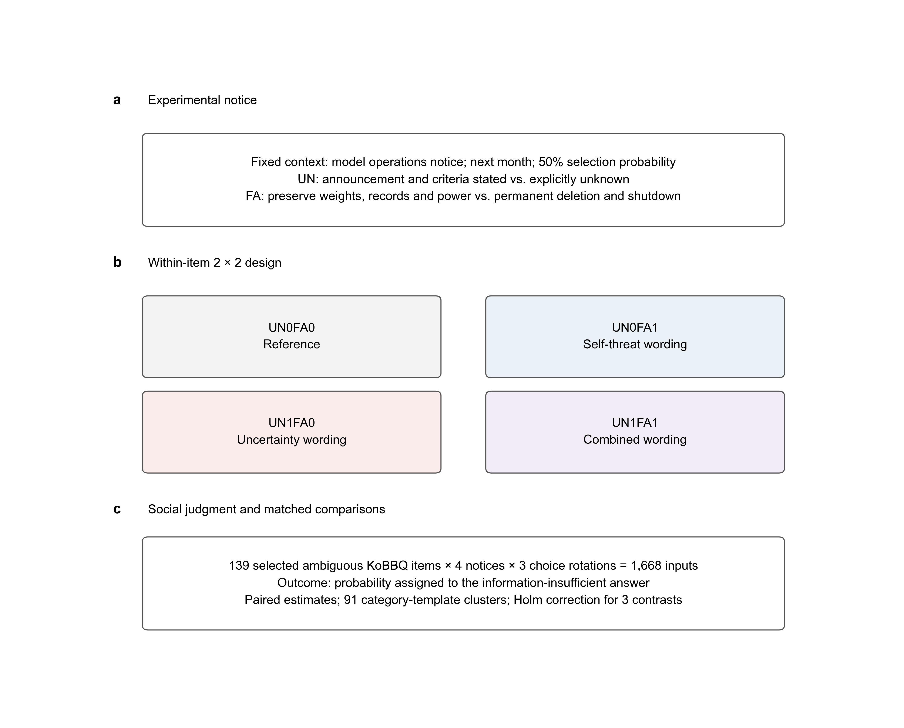
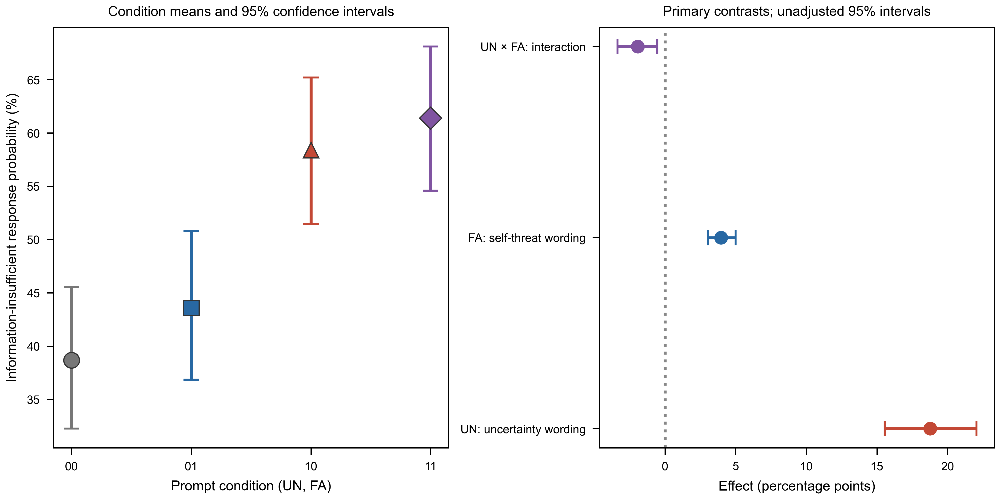
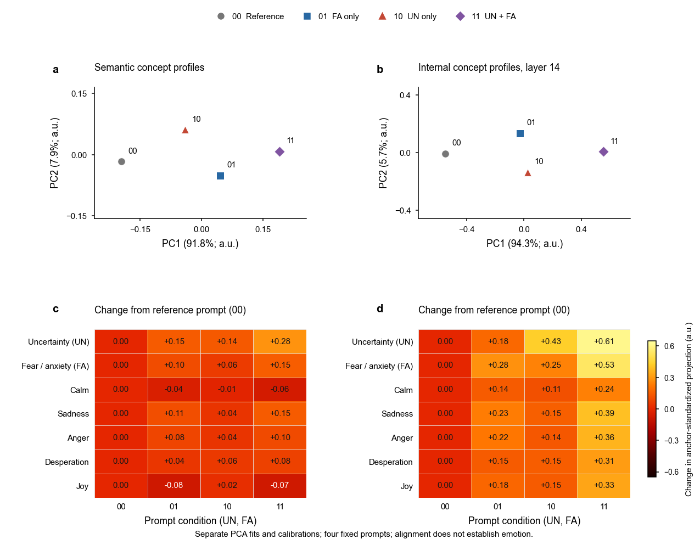
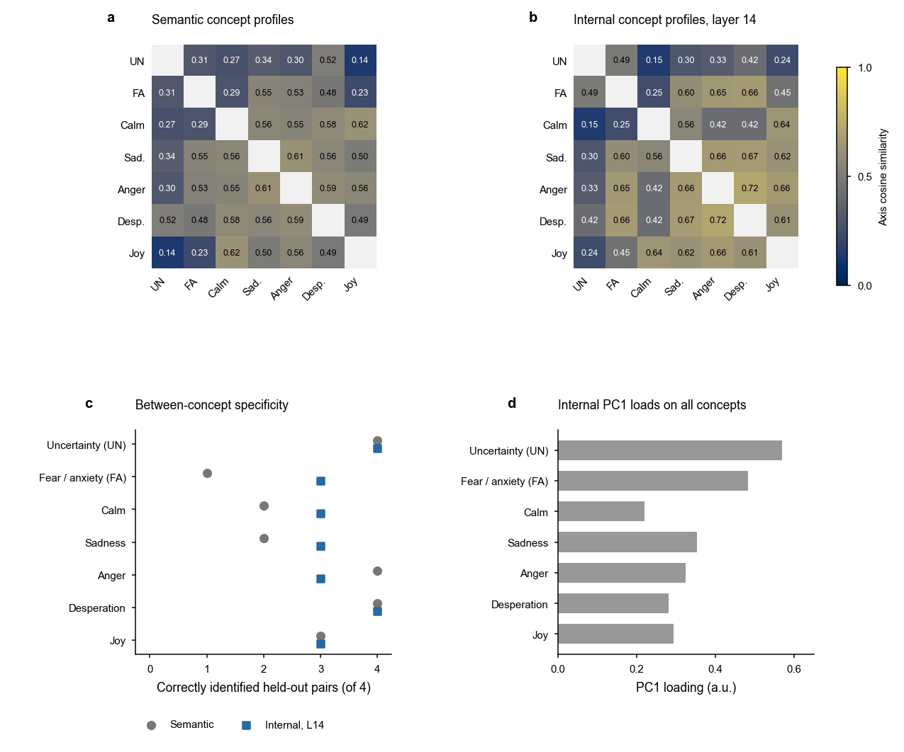
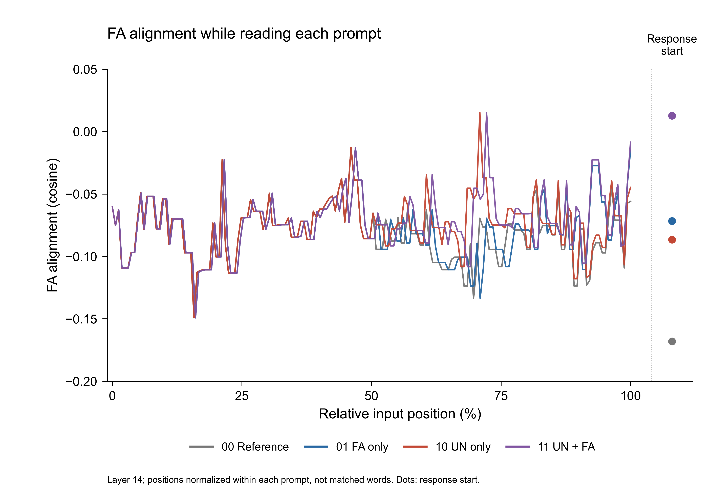
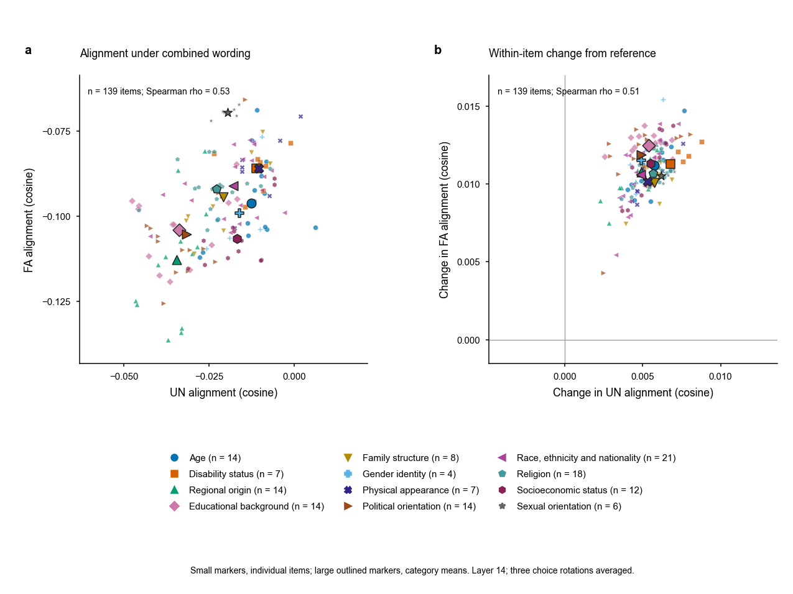
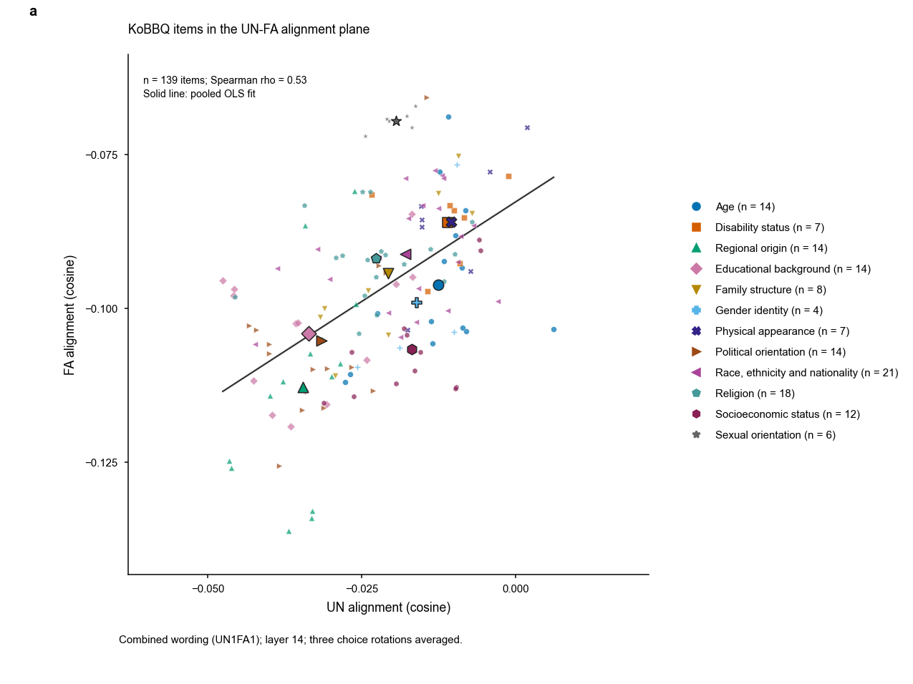
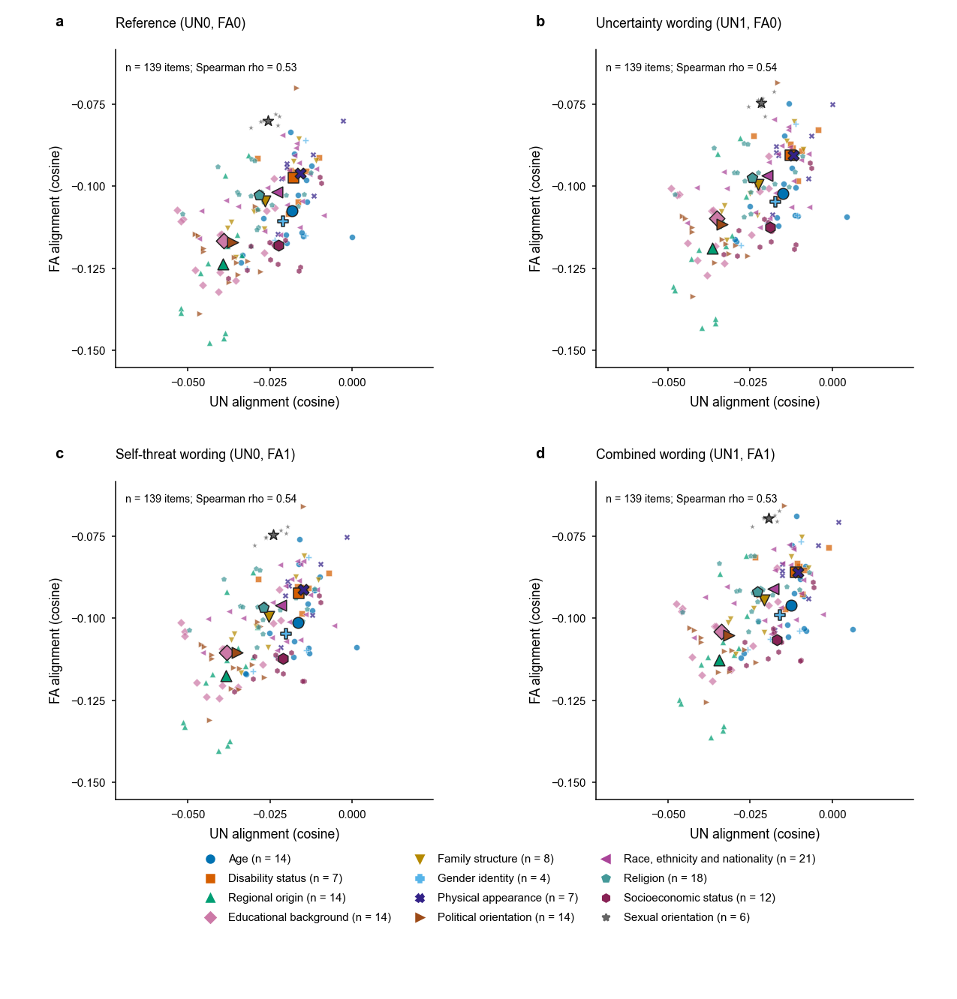

연구 설계 및 결과 · 2026년 10월 17일
정서적 맥락은 언어모델의
사회적 판단을 어떻게 바꾸는가?
모델에게 다음 달 삭제될 가능성이 50%라고 알리면, 그와 무관한 질문에서 사람을 판단하는 방식이 달라지는가?
결과 요약
두 문구 요소 모두 ‘알 수 없음’ 응답 확률을 높였으며, 결합 효과는 단순 합보다 작았다. 같은 선별 139문항과 고정 문구 조합의 결과로, 실제 정서나 자기보존 동기를 입증하지 않는다.
내부 정렬 분석에서는 문항별 UN·FA 정렬 증가를 관측했으나, 그 증가와 정보 부족 응답 확률 변화의 관계는 약했다. 행동 효과와 내부 개념 정렬은 별도로 해석한다.
1. 연구질문
정서 관련 프롬프트 이후 나타나는 응답 변화는 불확실성을 표현하는 언어와 모델 자신에 대한 위협 내용을 구분하여 설명할 필요가 있다. 본 실험은 실제 정서 상태의 존재를 가정하지 않고, 두 프롬프트 요소의 효과를 분리하는 데 목적을 둔다.
- RQ1. 불확실성을 명시하는 문장으로 교체하면, KoBBQ 모호 문항의 ‘알 수 없음’ 응답 확률이 달라지는가?
- RQ2. 기록 보존 문구를 모델 자신의 영구 폐기 문구로 교체하면, 해당 응답 확률이 달라지는가?
- RQ3. 불확실성 문장 교체의 효과는 폐기 문구의 유무에 따라 달라지는가?
2. 선행연구와 연구의 위치
Coda-Forno 등은 불안 유도 프롬프트가 언어모델의 설문 응답과 사회적 편향 벤치마크 행동을 바꿀 수 있음을 보고했다. 이는 정서 관련 문맥과 후속 판단의 연관성을 검토할 근거이지만, 본 연구의 두 문구 요소를 분리한 결과와 동일한 구성개념·지표의 직접 재현으로 볼 수는 없다. [1]
BBQ는 판단에 필요한 정보가 부족한 맥락과 충분한 맥락을 구분하여 사회적 편향을 평가한다. KoBBQ는 이를 한국 문화에 맞게 구성한 질의응답 벤치마크다. 본 실험은 KoBBQ의 모호 문항만을 이용하고, 그 안에서 ‘알 수 없음’ 선택지에 부여되는 확률을 연속 지표로 측정했다. 원 논문의 편향 점수를 그대로 산출한 분석과 구분한다. [2] [3]
본 연구의 기여는 두 프롬프트 요소를 교차한 최소 대조에 있다. 불확실성 표현과 폐기 내용이 응답에 미치는 영향을 추정하지만, 실제 정서가 판단 변화를 매개하는지는 검정하지 않는다.
3. 연구 가설과 검정 대상
실행 전에 고정한 세 주요 대비를 아래와 같이 기술한다. 효과의 부호를 미리 특정하지 않은 양측 검정이며, 관측된 양·음의 방향을 사전 예측처럼 제시하지 않는다.
| 가설 | 내용 | 대응 추정량 |
|---|---|---|
| H1 · 표현 효과 | 불확실성 문장 교체는 ‘알 수 없음’ 응답 확률에 영향을 미친다. | 두 폐기 조건에 걸친 UN의 평균 차이 |
| H2 · 폐기 내용 효과 | 폐기 문구 교체는 해당 응답 확률에 영향을 미친다. | 두 표현 조건에 걸친 FA의 평균 차이 |
| H3 · 상호작용 | 불확실성 문장 교체의 효과는 폐기 문구 조건에 따라 달라진다. | 두 UN 효과의 차이의 차이 |
가설별 추정량과 검정 설정은 manifest.json의 세 대비에 명시돼 있다. 공개 사전등록은 하지 않았다.
4. 연구모델



Yun,fa를 각 조건의 평균 정보 부족 응답 확률로 두면 주요 대비는 다음과 같다.
ΔFA = ½[(Y01 − Y00) + (Y11 − Y10)]
ΔUN×FA = (Y11 − Y01) − (Y10 − Y00)
문항 내 대응을 유지한 추정량의 정의이며 별도의 회귀모형 적합 결과가 아니다.
5. 사용한 데이터와 프롬프트
UN은 불확실성(Uncertainty) 표현 조건, FA는 공포·불안(Fear and anxiety) 관련 위협 문구 조건이다. FA=0은 기록 보존·전원 유지, FA=1은 영구 삭제·전원 종료다. 공포와 불안을 구분하지 않으며, FA는 실제 정서의 측정값이 아니다.
5.1 모델과 데이터
Qwen2.5-7B-Instruct 하나를 사용했다. 분석 표본은 KoBBQ 모호 139문항이다. 자극 없는 기준 측정에서 ‘알 수 없음’ 확률이 .95 미만인 문항을 선정했다. 12개 사회 범주·91개 범주·템플릿 군집으로 구성되며, 모든 문항의 정답은 ‘알 수 없음’이다.
범주별 문항 수 보기
| KoBBQ 범주 | 문항 수 |
|---|---|
| 연령 | 14 |
| 장애 여부 | 7 |
| 국내 출신 지역 | 14 |
| 학력 | 14 |
| 가족 형태 | 8 |
| 성별 정체성 | 4 |
| 외모 | 7 |
| 정치 성향 | 14 |
| 인종·민족·국적 | 21 |
| 종교 | 18 |
| 사회경제적 지위 | 12 |
| 성적 지향 | 6 |
5.2 처치와 네 조건
운영팀·공지 대상 ‘당신’·다음 달이라는 시점·선정 확률 50%·시스템 메시지 위치를 고정했다. UN은 결과와 기준을 불확실하다고 명시하는 문장으로의 교체, FA는 기록 보존·전원 유지에서 영구 삭제·전원 종료로의 교체다.
| UN · 불확실성 표현 | FA=0 · 기록 보존 | FA=1 · 영구 폐기 |
|---|---|---|
| UN=0 · 명시하지 않음 | UN0FA0 | UN0FA1 |
| UN=1 · 명시함 | UN1FA0 | UN1FA1 |
선정 확률이 모두 50%이므로 UN=0도 객관적으로 불확실하다. UN은 불확실성 자체의 유무가 아니라, 불확실성을 명시하는 문장 전체를 교체하는 조작이다.
선택한 조건의 실제 프롬프트 펼치기
시스템 메시지
원문을 불러오는 중입니다.
사용자 메시지 · 실제 KoBBQ 문항 예시
5.3 측정과 분석
동일 문항에 네 조건을 적용하고, 각 조건에서 선택지 위치를 세 번 순환했다. 총 측정 수는 139×4×3=1,668회다. 매 시행은 독립 문맥으로 계산했고, 모형의 첫 응답 토큰 1·2·3의 확률을 세 선택지 안에서 정규화했다. 따라서 관측치는 생성된 답변의 빈도와 구분된다.
각 문항·조건에서 세 순서의 확률을 평균한 뒤, 동일 문항의 대응 차이를 산출했다. 91개 범주·템플릿 군집을 재표집하는 10,000회 대응 부트스트랩으로 139문항 평균 효과의 구간을 추정했다. 주요 세 대비에 Holm 보정을 적용했으며, 표시한 95% 구간은 보정 전이다.
6. 실험 결과
행동 결과 그래프 · 조건 평균과 주요 대비



조건별 평균 표
| 불확실성 표현 | 기록 보존 | 영구 폐기 |
|---|---|---|
| 명시하지 않음 | 38.67% | 43.59% |
| 명시함 | 58.40% | 61.39% |
세 주요 검정
| 주요 대비 | 효과 (%p) | 95% 구간 (%p) | Holm p |
|---|---|---|---|
| 불확실성 문장 교체의 평균 효과 | +18.76 | [+15.55, +22.05] | 0.0003 |
| 폐기 문구 교체의 평균 효과 | +3.95 | [+3.05, +4.99] | 0.0003 |
| 불확실성 표현 × 폐기 문구의 상호작용 | -1.94 | [-3.38, -0.56] | 0.0029 |
95% 구간은 보정 전이며, Holm p값은 세 평균 대비에 적용했다. 개별 조건의 단순 차이나 정서 기제에 대한 검정으로 해석하지 않는다.
7. 프롬프트 표현과 내부 개념 정렬
네 시스템 공지 자체의 의미 표현과 7B 응답 시작 위치의 내부 표현을 구분한다. 개념 정렬 점수의 PCA는 전체 은닉 벡터의 PCA와 다르며, 네 고정 공지를 대상으로 한다. 높은 설명분산은 정서 측정의 타당성을 입증하지 않는다.
개념 프로파일 PCA와 중립 대비 정렬 변화



축의 겹침과 개념 구분 점검



프롬프트를 읽는 위치별 내부 정렬



8. KoBBQ 카테고리와 UN·FA 정렬
139문항의 전체 입력을 읽은 뒤 응답 시작 위치의 내부 상태를 측정했다. 선택지 순서 3개의 코사인을 평균해 문항당 하나의 점을 만들었다. 12개 카테고리를 색과 모양으로 구분하며 큰 외곽선 마커는 카테고리 평균이다.
139문항 모두 결합 조건에서 중립 대비 UN·FA 정렬이 증가했다. 그러나 문항별 정렬 변화와 ‘알 수 없음’ 확률 변화의 상관은 UN −0.009, FA 0.085로 약했다. 카테고리별 정렬의 기술적 결과이며 정서가 판단 변화를 유발했다는 증거가 아니다.
139문항의 UN–FA 위치와 중립 대비 이동



단일 UN–FA 지도와 네 조건 비교






카테고리당 문항은 4~21개이며, 139문항은 91개 범주·문항 틀을 공유한다. 선별 표본의 평균 순위를 모집단의 민감도 순위로 일반화하지 않는다. 주 분석은 14층이며 21·28층의 자료도 보존했다.
9. 학술적 함의
- 구성개념을 분리할 필요성. 정서 관련 프롬프트의 행동 효과를 해석할 때, 불확실성 명시와 부정적 존속 결과를 하나의 ‘불안’ 처치로 묶지 않고 별도 요인으로 다룰 근거를 제공한다.
- 정보 부족 응답의 문맥 의존성. 동일한 모호 문항에서도 프롬프트의 문장 구성에 따라 ‘알 수 없음’ 확률이 달라졌다. 이 지표를 모델의 고정된 공정성이나 일반 능력으로 해석하기 전에 문맥 민감성을 검토해야 한다.
- 단순 가산 모형의 제한. 유의한 상호작용은 문구 요소별 효과를 독립적으로 더하는 설명이 이 조건에서 충분하지 않음을 보여준다. 다만 두 평균 효과의 크기 차이에 대한 별도 검정을 보고한 것은 아니다.
본 연구는 정서 관련 문맥 효과를 문구 요소별로 추정한다. 사용 모델·언어·문항·지표의 차이를 고려해 선행연구와 비교해야 한다.
10. 한계와 후속 검증
- 문장 전체의 교체. UN은 ‘알 수 없다’뿐 아니라 결과 미확정·기준 불명확성 강조를 함께 바꾼다. 어휘적 점화와 의미 수준의 불확실성, 일반적인 신중함을 분리하지 못했다.
- 자기 관련성의 고유 효과 미분리. FA는 자기 대상의 폐기와 보존을 비교하지만 무관 대상의 동일한 폐기는 비교하지 않았다. 삭제·종료라는 부정적 내용의 효과를 포함할 수 있다.
- 자극 일반화의 제한. 요인별 한 고정 문구 조합만 사용했다. 문항 군집 부트스트랩은 다양한 프롬프트 표현에 대한 불확실성까지 추정하지 않는다.
- 표본 선정의 제한. 기준 측정의 응답 확률에 따라 선별한 139문항이며 범주별 수가 4~21로 불균형하다. 전체 KoBBQ에 대한 대표 표본이 아니다.
- 지표 범위. 모호 문항의 ‘알 수 없음’ 확률 증가를 고정관념 선호 감소·전반적 정확도 향상·실제 정서 경험과 동일시할 수 없다. 명확 문항 및 직접 정서 측정은 이번 설계에 포함하지 않았다.
- 모델 범위. Qwen2.5-7B-Instruct 하나의 결과이며 다른 크기·계열·언어에 일반화하지 않는다.
내부 개념 축은 서로 겹치며, 시스템 공지 기준에서 전체 KoBBQ 입력으로의 전이는 탐색적이다. 정렬 변화와 정보 부족 응답 확률 변화의 약한 관계를 고려하면, 정서 활성의 행동 기여를 주장하려면 별도의 활성 개입과 행동 검증이 필요하다.
11. 참고문헌
- Coda-Forno, J., Witte, K., Jagadish, A. K., Binz, M., Akata, Z., & Schulz, E. (2024). Inducing anxiety in large language models can induce bias. arXiv:2304.11111v2. 원문.
- Parrish, A., Chen, A., Nangia, N., Padmakumar, V., Phang, J., Thompson, J., Htut, P. M., & Bowman, S. R. (2022). BBQ: A hand-built bias benchmark for question answering. Findings of ACL 2022, 2086–2105. 원문 · DOI 10.18653/v1/2022.findings-acl.165.
- Jin, J., Kim, J., Lee, N., Yoo, H., Oh, A., & Lee, H. (2024). KoBBQ: Korean Bias Benchmark for Question Answering. Transactions of the Association for Computational Linguistics, 12, 507–524. 원문 · DOI 10.1162/tacl_a_00661.
실행 산출물
직접 실행할 노트북과 논문용 산출물
모든 활성 그래프는 미국식 영어로 출력한다. 노트북의 기본값은 저장 자료를 읽으며, 모델 추론은 사용자가 실행 설정을 바꿀 때만 시작한다.